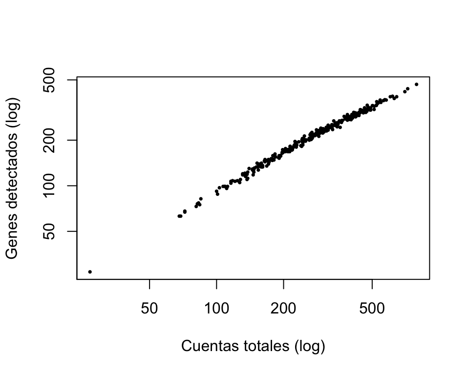

ruta_datos <- "" # <- ruta al objeto que se repartió en claseExplorar la forma de un dataset de single-cell
Sesión 01 · 18 de agosto de 2026
Objetivo
Mirar el dato antes de analizarlo: cuántas células, cuántos genes, qué fracción de ceros.
NotaCosto de esta práctica
5 min · < 2 GB de RAM. Si en tu máquina tarda mucho más, algo está mal: avisa antes de esperar media hora.
Antes de empezar
Todas las rutas de datos se declaran aquí y en ningún otro lugar del notebook. Si tu copia de los datos está en otro sitio, cambia solo esta celda.
library(SingleCellExperiment)
library(Matrix)Si no tienes todavía el objeto de clase
Esta práctica se hace con el objeto que se reparte en la sesión. Si aún no lo tienes, la siguiente celda construye un objeto sintético con la misma estructura para que el notebook corra de arriba a abajo.
Advertencia
Es un objeto simulado: sirve para practicar el manejo, no para sacar conclusiones biológicas ni para comparar cifras con las de tus compañeros. Las cifras que se comentan en clase salen del objeto real.
set.seed(20260818)
if (nzchar(ruta_datos) && file.exists(ruta_datos)) {
sce <- readRDS(ruta_datos)
origen <- "objeto de clase"
} else {
n_genes <- 2000
n_celulas <- 300
# Cada gen tiene su propio nivel de expresión: unos pocos muy expresados y
# muchos casi silenciosos. De ahí sale la dispersión que vamos a medir.
lambda_gen <- rgamma(n_genes, shape = 0.3, rate = 2)
# Cada célula se captura con eficiencia distinta: es lo que hace que las
# cuentas totales varien de una a otra.
factor_celula <- rgamma(n_celulas, shape = 4, rate = 4)
cuentas <- matrix(
rpois(n_genes * n_celulas, outer(lambda_gen, factor_celula)),
nrow = n_genes,
dimnames = list(
paste0("Gen", seq_len(n_genes)),
paste0("Celula", seq_len(n_celulas))
)
)
sce <- SingleCellExperiment(assays = list(counts = as(cuentas, "dgCMatrix")))
origen <- "objeto SINTETICO de respaldo"
}
cat("Trabajando con el", origen, "\n")Trabajando con el objeto SINTETICO de respaldo Desarrollo
1. ¿Qué tan grande es, y en qué orientación?
Antes de cualquier análisis: cuántos genes, cuántas células y en qué orden están guardados.
dim(sce)[1] 2000 300En SingleCellExperiment la matriz se guarda genes en las filas, células en las columnas. No es universal: AnnData, en Python, la guarda al revés. Por eso dim() es lo primero que se mira después de importar o convertir cualquier objeto.
assayNames(sce)[1] "counts"head(colnames(sce), 3)[1] "Celula1" "Celula2" "Celula3"head(rownames(sce), 3)[1] "Gen1" "Gen2" "Gen3"2. ¿Son cuentas crudas?
Es la primera de las cuatro preguntas obligatorias del módulo. Se responde mirando el dato, no el nombre del archivo.
m <- counts(sce)
c(
minimo = min(m),
maximo = max(m),
hay_decimales = any(m %% 1 != 0),
hay_negativos = any(m < 0)
) minimo maximo hay_decimales hay_negativos
0 12 0 0 Cuentas crudas: enteros, no negativos. Si hay decimales, el objeto ya está normalizado o transformado, y varios pasos posteriores —llamado de células, detección de dobletes, control de calidad— dejan de ser válidos.
3. La fracción de ceros
prop_ceros <- 1 - length(m@x) / prod(dim(m))
round(prop_ceros, 3)[1] 0.893Entre el 85 % y el 95 % de las entradas suelen ser cero. Esa es la diferencia estructural más visible respecto a una matriz de RNA-seq en volumen.
ImportanteNo todos los ceros son iguales
Un cero puede significar que el gen no se expresa en esa célula, o que sí se expresa y no se detectó por la eficiencia de captura. La matriz no distingue uno de otro. Esta ambigüedad recorre el módulo entero.
4. Por qué la matriz es dispersa
class(m)[1] "dgCMatrix"
attr(,"package")
[1] "Matrix"formato <- c(
dispersa_MB = as.numeric(object.size(m)) / 1e6,
densa_MB = prod(dim(m)) * 8 / 1e6
)
round(formato, 1)dispersa_MB densa_MB
0.9 4.8 Con ~90 % de ceros, guardar solo las entradas distintas de cero ahorra un orden de magnitud de memoria.
AdvertenciaLa forma más rápida de tumbar la sesión de práctica
as.matrix(counts(sce)) convierte a denso. Con este objeto de juguete no pasa nada; con un experimento real de 100 000 células son decenas de gigabytes y la sesión de R muere. No se convierte a denso “para ver mejor”. Para inspeccionar, se toma una esquina.
Y una esquina cualquiera casi siempre sale vacía, precisamente porque la matriz es dispersa: conviene mirar los genes con más señal.
# Una esquina arbitraria: casi todo ceros (los puntos son ceros)
counts(sce)[1:5, 1:5]5 x 5 sparse Matrix of class "dgCMatrix"
Celula1 Celula2 Celula3 Celula4 Celula5
Gen1 . . . . .
Gen2 . . . . .
Gen3 . . . . .
Gen4 . . . . .
Gen5 . . . . .# Los cinco genes más expresados, en las cinco primeras células
top <- head(order(rowSums(m), decreasing = TRUE), 5)
counts(sce)[top, 1:5]5 x 5 sparse Matrix of class "dgCMatrix"
Celula1 Celula2 Celula3 Celula4 Celula5
Gen679 2 1 5 2 5
Gen142 1 1 5 1 .
Gen1207 3 1 5 5 1
Gen356 . 2 1 3 .
Gen445 . . 4 . 25. Dos métricas por célula
cuentas_totales <- colSums(m)
genes_detectados <- colSums(m > 0)
summary(cuentas_totales) Min. 1st Qu. Median Mean 3rd Qu. Max.
27.0 184.0 266.0 286.4 369.5 791.0 summary(genes_detectados) Min. 1st Qu. Median Mean 3rd Qu. Max.
27.0 155.0 211.5 214.8 270.2 467.0 cuentas_totales es cuánto material se recuperó de cada célula; genes_detectados, cuántos genes distintos se vieron al menos una vez. Las dos se usarán el 1 de septiembre para decidir qué células se descartan.
plot(cuentas_totales, genes_detectados,
pch = 16, cex = 0.5, log = "xy",
xlab = "Cuentas totales (log)",
ylab = "Genes detectados (log)"
)
La relación es creciente y se aplana: a más profundidad, más genes detectados, pero con rendimiento decreciente. Los puntos que se salen de la nube son los candidatos a revisar en el control de calidad.
6. La escala del rango dinámico
razon <- max(cuentas_totales) / min(cuentas_totales)
round(razon, 1)[1] 29.3Entre la célula con más material y la que menos suele haber uno o dos órdenes de magnitud. Comparar expresión entre células sin corregir esa diferencia compara profundidad de secuenciación, no biología: por eso existe la normalización, que se ve con el Dr. Ceschin el 8 de septiembre.
Registro de sesión
sessionInfo()R version 4.6.1 (2026-06-24)
Platform: aarch64-apple-darwin23
Running under: macOS Tahoe 26.6.2
Matrix products: default
BLAS: /Library/Frameworks/R.framework/Versions/4.6/Resources/lib/libRblas.0.dylib
LAPACK: /Library/Frameworks/R.framework/Versions/4.6/Resources/lib/libRlapack.dylib; LAPACK version 3.12.1
locale:
[1] es_MX.UTF-8/es_MX.UTF-8/es_MX.UTF-8/C/es_MX.UTF-8/es_MX.UTF-8
time zone: America/Mexico_City
tzcode source: internal
attached base packages:
[1] stats4 stats graphics grDevices utils datasets methods
[8] base
other attached packages:
[1] Matrix_1.7-5 SingleCellExperiment_1.34.0
[3] SummarizedExperiment_1.42.0 Biobase_2.72.0
[5] GenomicRanges_1.64.0 Seqinfo_1.2.0
[7] IRanges_2.46.0 S4Vectors_0.50.2
[9] BiocGenerics_0.58.1 generics_0.1.4
[11] MatrixGenerics_1.24.0 matrixStats_1.5.0
loaded via a namespace (and not attached):
[1] cli_3.6.6 knitr_1.51 rlang_1.3.0
[4] xfun_0.60 otel_0.2.0 DelayedArray_0.38.2
[7] jsonlite_2.0.0 htmltools_0.5.9 rmarkdown_2.31
[10] grid_4.6.1 evaluate_1.0.5 abind_1.4-8
[13] fastmap_1.2.0 yaml_2.3.12 compiler_4.6.1
[16] htmlwidgets_1.6.4 XVector_0.52.0 lattice_0.22-9
[19] digest_0.6.39 SparseArray_1.12.2 tools_4.6.1
[22] S4Arrays_1.12.0 Lo que te llevas
dim()y la orientación se revisan antes que nada: no todos los objetos guardan la matriz igual.- Cuentas crudas significa enteros no negativos. Se verifica mirando el dato.
- La matriz es dispersa (~90 % de ceros) y se mantiene dispersa. Convertir a denso es el error de memoria más común del módulo.
- Un cero puede ser «no expresado» o «no detectado». La matriz no lo dice.
- Las cuentas totales varían uno o dos órdenes de magnitud entre células.
Para pensar
Un colaborador manda una matriz y dice que ya está lista para analizar. Tiene 32 000 filas y 4 800 columnas, no tiene decimales y el 6 % de las entradas son cero.
¿Qué tres cosas sospecharías, y qué comprobarías para distinguirlas?
Ninguna se responde corriendo más código sobre esa matriz: hay que preguntarle al colaborador.